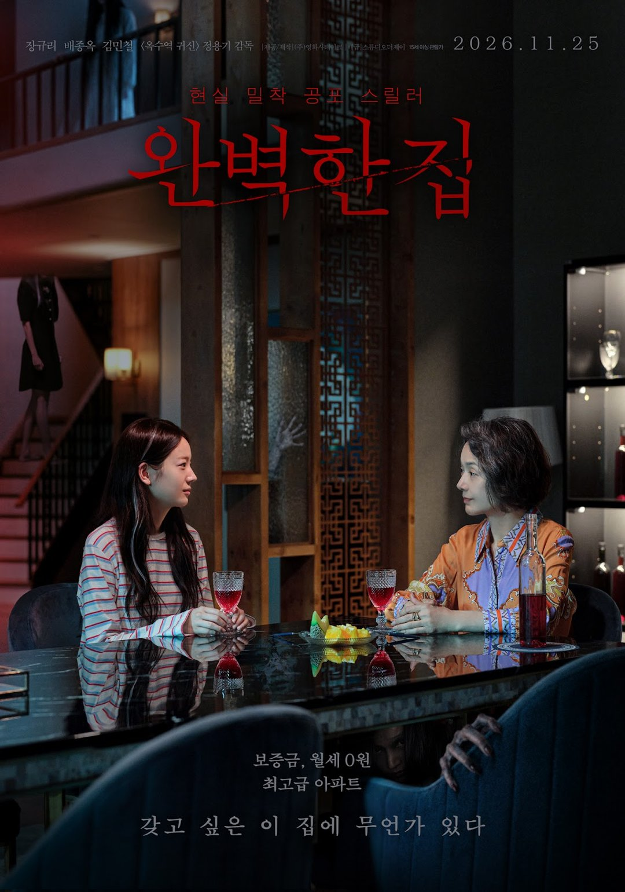
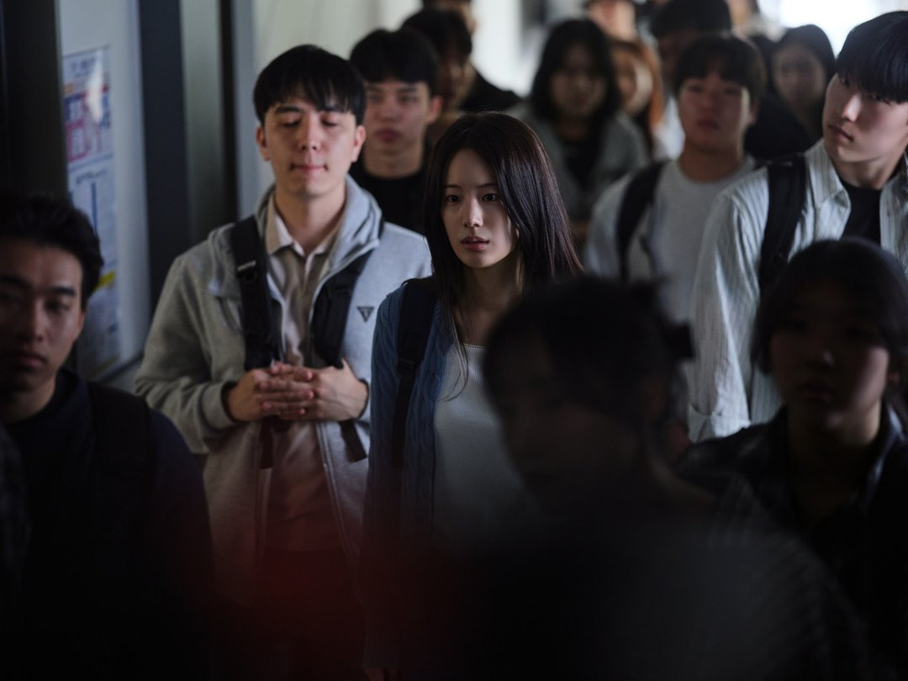
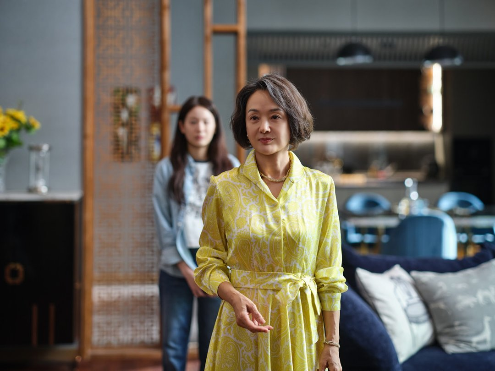
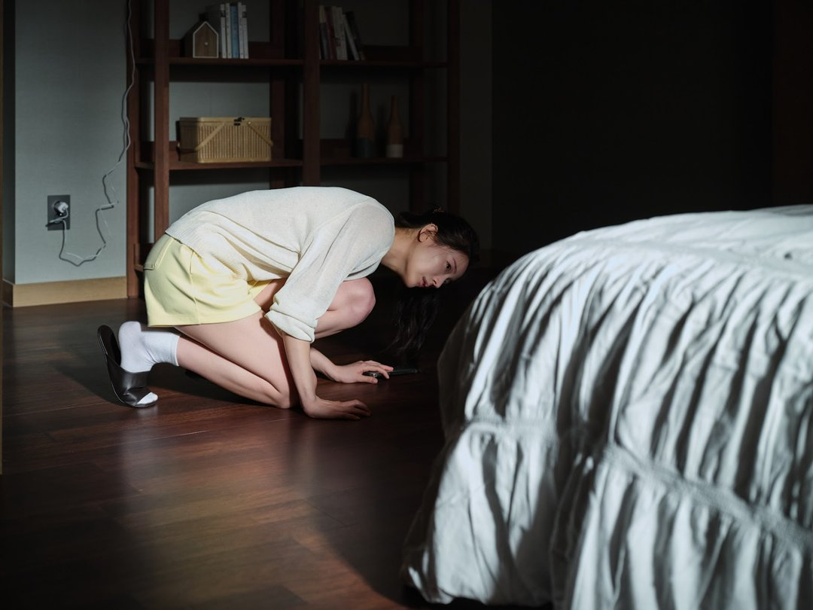
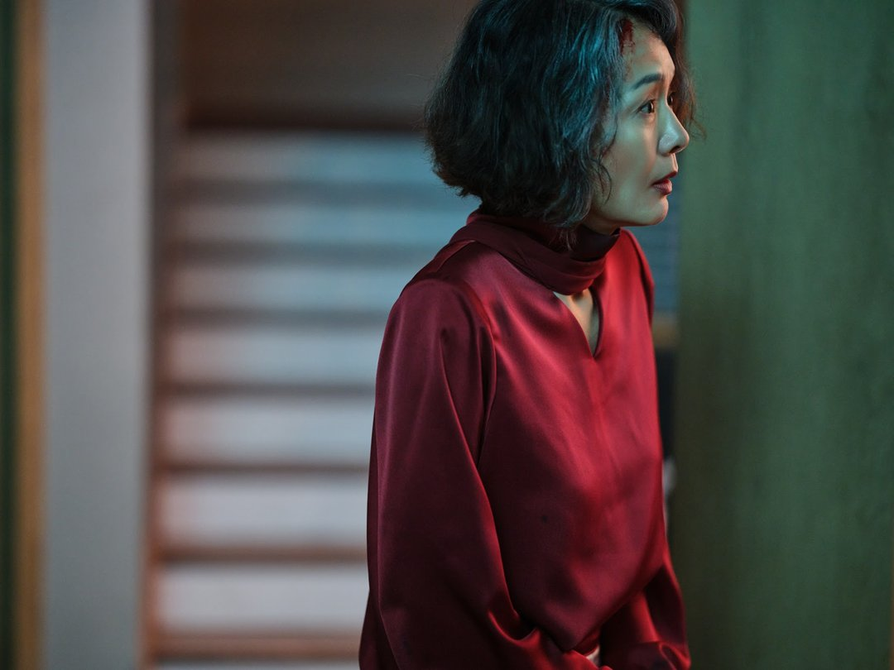
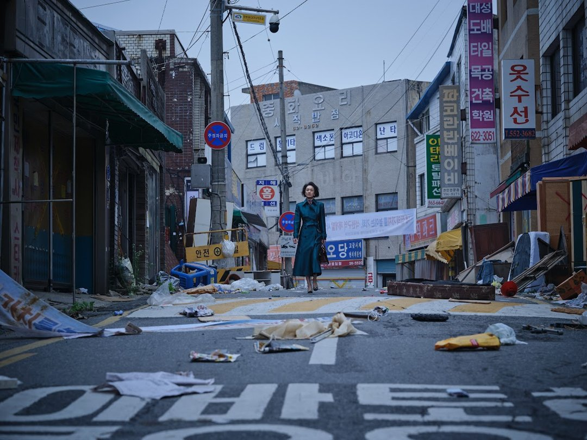
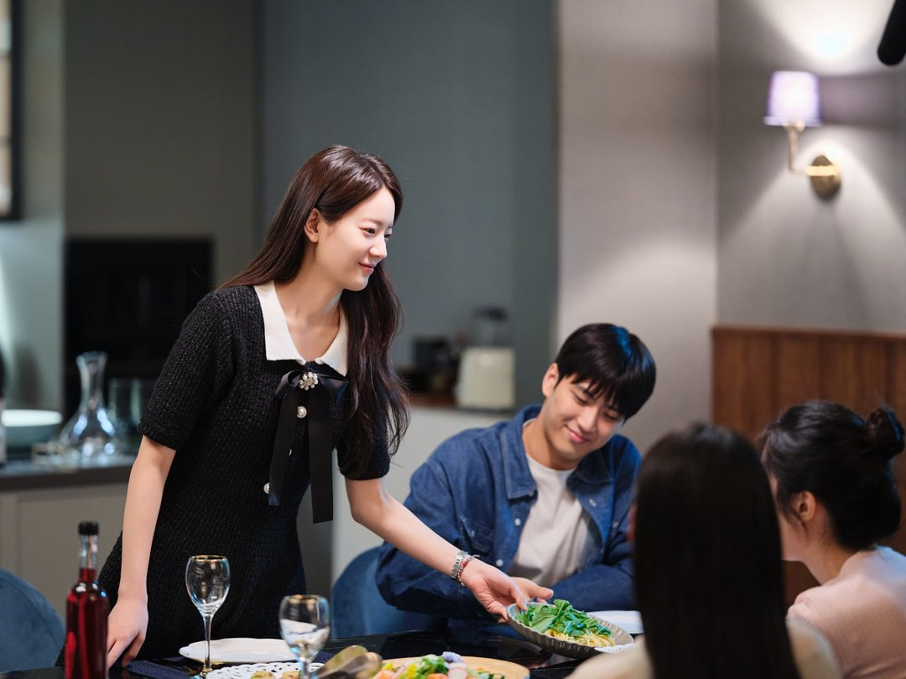

월세 없이 서울 한복판 80평 최고급 아파트에 살 수 있다면 들어가시겠어요? 영화 '완벽한 집'은 이 제안을 받아들인 대학생 이야기예요. 11월 25일 개봉을 앞두고 18일 언론시사회에서 줄거리와 배우들의 이야기가 처음 자세히 나왔어요.
📷 사진 1 자리
▲ 영화 '완벽한 집' 메인 포스터, 11월 25일 개봉 · 사진=영화사테이크 제공
80평 아파트에 들어간 대학생
주인공은 기댈 곳 없는 24세 대학생 규빈이에요. 갈 곳이 없던 규빈은 파격적인 조건으로 최고급 아파트에 들어가 혼자 사는 집주인 금림의 룸메이트가 돼요.
📷 사진 2 자리
▲ 대학생 규빈(장규리) · 사진=영화사테이크 제공
우아하고 친절해 보이는 금림 곁에서 지내는 동안 집 안에서 기이한 일이 하나둘 생겨요. 규빈의 오랜 친구 부영은 이 집이 이상하다는 걸 가장 먼저 눈치채는 인물이에요.
📷 사진 3 자리
▲ 최고급 아파트의 집주인 금림(배종옥)과 규빈(장규리) · 사진=영화사테이크 제공
장규리·배종옥, 둘 다 '처음'인 작품
규빈 역은 프로미스나인 출신 장규리가 맡았어요. 이번이 첫 스크린 주연이에요. 작년 부산국제영화제에서 스크린 속 자신을 처음 봤다고 했죠.
📷 사진 4 자리
▲ '완벽한 집' 규빈(장규리) · 사진=영화사테이크 제공
평소 감정을 크게 드러내지 않는 내향적인 편이라 과장된 표현이 필요한 장르가 처음엔 두려웠다고 털어놨어요. 해내고 나니 해소감이 들었다는 말도 덧붙였고요.
▶ 영상 1 자리
금림 역의 배종옥은 이 영화로 공포 장르에 처음 도전했어요. 공포만을 위한 공포가 아니라 현실에 발붙인 이야기라서 골랐다고 밝혔어요. 부영 역은 김민철이에요.
📷 사진 5 자리
▲ '완벽한 집' 금림(배종옥) · 사진=영화사테이크 제공
귀신보다 무서운 건 '집이 없다는 것'
연출은 2023년 영화 '옥수역 귀신'을 만든 정용기 감독이에요. 이번엔 방향이 조금 달라요. 정 감독은 "현실이 더 공포스럽다"는 데 초점을 맞췄다고 했어요.
📷 사진 6 자리
▲ 영화 '완벽한 집' 스틸 · 사진=영화사테이크 제공
머물 곳이 없는 청년의 불안, 큰 집에서 혼자 늙어가는 노인의 고립. 감독은 이 두 가지가 귀신보다 무서울 수 있다고 봤어요. 배종옥도 "공포보다는 스릴러에 가깝다"고 소개했어요.
▶ 영상 2 자리
이런 분께 맞는 영화
'완벽한 집'은 주거 문제를 공포 장르에 얹은 영화예요. 청년 주거난과 노인의 고독을 무서움의 재료로 썼다는 점이 다른 공포영화와 갈리는 지점이에요.
볼거리는 장규리와 배종옥 두 사람이 한집에서 만드는 긴장이에요. 다만 개봉 전 공개된 한 리뷰는 사회 문제를 다루는 깊이가 소재만큼 따라오지 못한다고 아쉬워했어요.
📷 사진 7 자리
▲ '완벽한 집' 식탁 장면 · 사진=영화사테이크 제공
깜짝 놀래키는 공포보다 상황이 조여 오는 스릴러를 좋아한다면 맞을 만한 영화예요. 장규리의 첫 주연 연기가 궁금한 분께도 권할 만해요.
귀신 대신 '월세 0원'이라는 제안을 무서움의 출발점으로 둔 설정이 이 영화의 가장 센 무기로 보여요. 공포영화를 잘 못 보는 편이라도 배종옥 말처럼 스릴러 쪽에 가깝다면 한 번 도전해 볼 만해요.
'완벽한 집'은 11월 25일 극장에서 개봉해요. 장규리, 배종옥, 김민철이 나오고 정용기 감독이 연출했어요.
함께 보면 좋은 이슈






